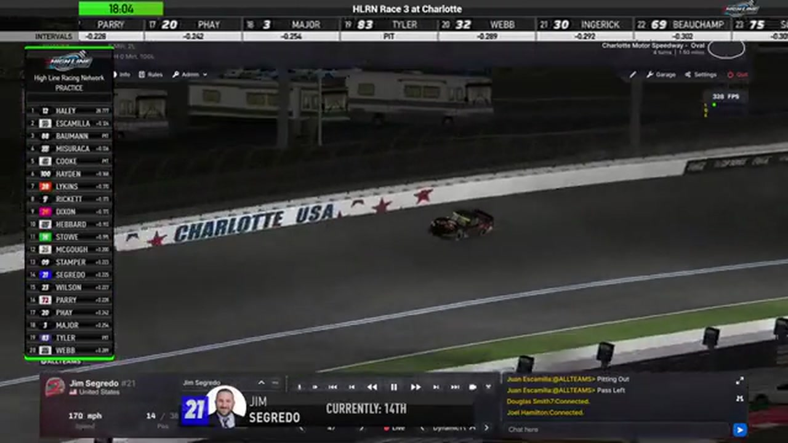

Jim Sagredo
Team assignment not stated in the structured owner record.
AN OFFICIAL-TAPE FOOTPRINT, NOT A RESULTS CLAIM
- Official files
- 18
- Central editions
- 0
- Exact tape cues
- 10
- Accepted podiums
- 0
Jim Sagredo appears in 18 official HLRN broadcast files across Seasons 1, 2. The current result ledger does not assign this driver a supported top-three finish. A consistently stated team affiliation remains open for owner review. The currently indexed source window runs from November 17, 2025 through July 20, 2026.
The primary chapter index supplies 10 direct jump points. Talladega is the most frequent named track in the current appearance ledger. The densest direct-tape categories are incident (5 cues) and postrace (4 cues). Those counts describe where the name is easiest to find; they are not fault, pace, or performance grades. A source-attributed car frame is published with its original video and timestamp. That is the current discovery map for Jim Sagredo.
Official name signals are used for discovery only. They do not become starts, points, incident counts, or an ability grade. This page is deliberately detailed about the tape and restrained about the unavailable competition record. Separately, 13 Highline Live files sit on the bonus shelf and never enter the official season ledger. The displayed name is labeled broadcast lower third confirmed; that status remains visible so an owner roster can strengthen or correct the identity without rewriting the evidence trail. Those boundaries define Jim Sagredo's public HLRN file.
10 featured race-tape cues
These are discovery routes into complete HLRN broadcasts, not performance grades or inferred results.
- S1 / R2 · BATTLE
Homestead-Miami runs side by side at the front
S1 / R2 at 44:52: The Homestead-Miami pack compresses side by side while Bryce Hinton and Jim Sagredo are named on the call. The chapter keeps the live battle intact and makes no finishing-order claim.
Homestead-Miami - S2 / R4 · INCIDENT
A Bowman bump turns Trevor Haley into Ross Campoli at EchoPark
Trevor Haley is turned after Nick Bowman bumps the No. 12 as it transitions up the track. Haley rotates into Ross Campoli, and the chain reaction reaches Jim Sagredo and other cars.
EchoPark Speedway - S2 / R2 · INCIDENT
Iowa's opening green immediately ends in an unresolved caution
Trevor Haley launches with Brandon Showers, Matt Brown, and Cory Cook near the front before a distant incident brings out the yellow. HLRN checks Scott Wise and Jim Sagredo but does not establish a visible cause.
Iowa - S1 / R16 · INCIDENT
John Cole Morgan's damaged run ends at Talladega pit road
HLRN finds John Cole Morgan's No. 64 with severe front-end damage. The car loses power and is clipped while approaching pit road before the live camera returns to Jim Sagredo and the leaders.
Talladega - S1 / R5 · INCIDENT
Eric Hayden and Jim Sagredo surface in the Watkins Glen caution replay
S1 / R5 at 1:00:05: The caution sequence centers the replay call on Eric Hayden and Jim Sagredo. This is a source-bounded incident window; it preserves what the booth reviews without assigning unsupported fault.
Watkins Glen - S1 / R3 · INCIDENT
Justin Lee Pearson and Brian Hebert surface in the Charlotte caution replay
S1 / R3 at 1:20:59: The caution sequence centers the replay call on Justin Lee Pearson, Brian Hebert, Jim Sagredo, and Dave Schutt. This is a source-bounded incident window; it preserves what the booth reviews without assigning unsupported fault.
Charlotte - S1 / R16 · POSTRACE
Jim Sagredo and Brandon Taylor anchor the Talladega post-race result review
S1 / R16 at 2:49:09: The reviewed live-race close has passed before this Talladega result booth review begins with Jim Sagredo and Brandon Taylor named in the discussion. It remains post-race context, not a new incident, stage, strategy call, finish, or result receipt.
Talladega - S1 / R7 · POSTRACE
Randy Showers and Jim Sagredo return in the Michigan post-race contact review
S1 / R7 at 2:17:42: The reviewed live-race close has passed before this Michigan incident booth review begins with Randy Showers, Jim Sagredo, and Brian Hayes named in the discussion. It remains post-race context, not a new incident, stage, strategy call, finish, or result receipt.
Michigan - S1 / R7 · POSTRACE
Matt Brown and Nick Bowman return in the Michigan post-race contact review
S1 / R7 at 2:19:59: The reviewed live-race close has passed before this Michigan incident booth review begins with Matt Brown, Nick Bowman, and Jim Sagredo named in the discussion. It remains post-race context, not a new incident, stage, strategy call, finish, or result receipt.
Michigan - S1 / R2 · POSTRACE
Nick Bowman and Fred Pennington return in the Homestead-Miami post-race contact review
S1 / R2 at 1:33:13: The reviewed live-race close has passed before this Homestead-Miami incident booth review begins with Nick Bowman, Fred Pennington, Timothy Tyler, and Jim Sagredo named in the discussion. It remains post-race context, not a new incident, stage, strategy call, finish, or result receipt.
Homestead-Miami
Verified team history is not consistently stated. No position-specific top-three result is currently accepted. The public spelling has broadcast identity support; an owner roster can still add legal-name, number, and team-history detail.